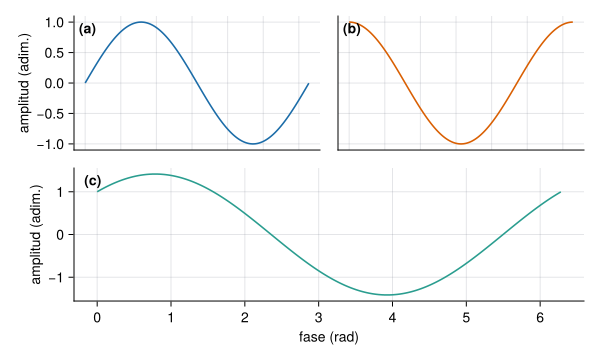

Ver el código
let
t = 0:0.01:2π
fig = Figure(size=(600, 360))
ax1 = Axis(fig[1, 1], ylabel="amplitud (adim.)")
ax2 = Axis(fig[1, 2])
ax3 = Axis(fig[2, 1:2], xlabel="fase (rad)", ylabel="amplitud (adim.)")
lines!(ax1, t, sin.(t), color=AZUL); lines!(ax2, t, cos.(t), color=NARANJA)
lines!(ax3, t, sin.(t) .+ cos.(t), color=VERDE)
linkxaxes!(ax1, ax2)
hidexdecorations!(ax1, grid=false); hidexdecorations!(ax2, grid=false); hideydecorations!(ax2, grid=false)
for (ax, letra) in zip((ax1, ax2, ax3), ("a", "b", "c"))
text!(ax, 0.02, 0.97, text="($letra)", space=:relative, align=(:left, :top), font=:bold)
end
fig
end